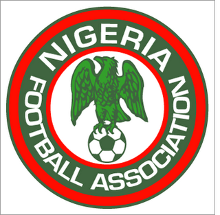

por Pedro Henrique B. N. Prado

O jogo é pela Copa do Mundo de 2010. Obinna corta o cruzamento e afasta de bico, Obinna domina no meio e toca para Obinna driblar o goleiro e marcar. São três os homônimos do atacante brasileiro que devem representar a Nigéria no Mundial (mas todos com dois enes no nome). O primeiro é zagueiro e usa o sobrenome Nwaneri. O segundo é o craque do time, o meia John Obi (abreviação de Obinna) Milkel. E o terceiro é o legítimo Obinna, o atacante que, aliás, foi a inspiração para o apelido do palmeirense.
Eles têm nome conhecido no Brasil, mas não ainda pelo que fazem nos campos. A Nigéria vai para sua quarta Copa do Mundo com uma geração renovada. Do time que brilhou na década de 90, com um ouro olímpico e duas oitavas de final de Mundial, só sobrou o tristemente inesquecível atacante Kanu, que destruiu o Brasil em Atlanta. Mesmo assim, ele é banco. É também a última lembrança da geração que colocou a Nigéria definitivamente no mapa do futebol.
Depois de uma decepcionante Copa de 2002, o país começou sua reformulação, o que custou campanhas sem brilho nas últimas Copas Africanas de Nações (ficou em terceiro neste ano) e a ausência do Mundial de 2006, depois de três classificações consecutivas. E por pouco a Nigéria não ficou fora também de 2010. Embora tenha sido a única a passar invicta pelas eliminatórias do continente, empatou metade dos jogos na fase final e só se garantiu na África do Sul com um gol aos 36 minutos do segundo tempo.
O herói da classificação foi Oba Oba Martins, artilheiro do time nas eliminatórias, com 10 gols, que saiu do banco para marcar dois contra o Quênia na última rodada. Com passagens por Internazionale e Newcastle, hoje no Wolfsburg, da Alemanha, ele é um dos nomes em quem os nigerianos mais depositam suas fichas.
O outro é o meia Mikel, um jovem de 22 anos, promissor e um tanto problemático, que joga no Chelsea. Ele chegou a ser afastado da seleção por indisciplina, mas terminou as eliminatórias com o número 10 nas costas e a confiança em alta. Mikel é um dos três jogadores que carregam o sobrenome Obinna, que vem da etnia Igbo e significa “coração do pai”. Em 2010, vai à África do Sul sonhando levar alegria aos 150 milhões de corações nigerianos.